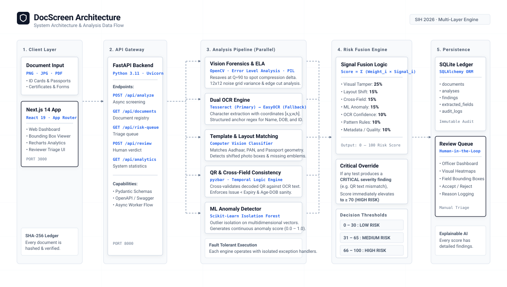

Multi-Layer AI Document Screening & Decision Fusion Pipeline

Weighted Risk Scoring, Override Logic, and Component Mapping
The system synthesizes all detection outputs into a single index (0 – 100) using a weighted linear model:
| Signal | Weight | Target Evaluation |
|---|---|---|
| Visual Tamper | 25% | ELA compression energy & noise variance inconsistencies |
| Template & Layout | 15% | Shifted bounding boxes, missing official emblems, or margin modifications |
| Cross-Field Consistency | 15% | QR code payload discrepancies vs printed OCR document text |
| ML Anomaly (Isolation Forest) | 15% | Multidimensional outlier features compared to standard distributions |
| OCR Anomalies | 10% | Character recognition confidence drops and distorted letterforms |
| Pattern Violations | 10% | Checksum/regex failures (Aadhaar, PAN, Passport specifications) |
| Metadata & Quality | 10% | EXIF software modification markers, blur, and glare penalties |
If any check identifies an unambiguous contradiction (e.g., QR code payload disagrees with printed text or photo splice detected), the overall score is automatically elevated to ≥ 70 (HIGH RISK) regardless of other passing signals.
| Layer | Technology | Role |
|---|---|---|
| Frontend | Next.js 14, React 19, Recharts | Web interface, bounding box viewer, analytics dashboard |
| Backend API | FastAPI, Uvicorn, Pydantic, Python 3.11 | Asynchronous REST endpoints and analysis orchestration |
| Vision & Forensics | OpenCV, PIL, NumPy | Image enhancement, Error Level Analysis, noise variance mapping |
| OCR & Barcode | Tesseract OCR, EasyOCR, Pyzbar | Dual-engine optical character recognition and QR decoding |
| Machine Learning | Scikit-Learn (Isolation Forest) | Unsupervised multidimensional anomaly detection |
| Data Persistence | SQLite, SQLAlchemy ORM | Immutable audit logging and verification records |